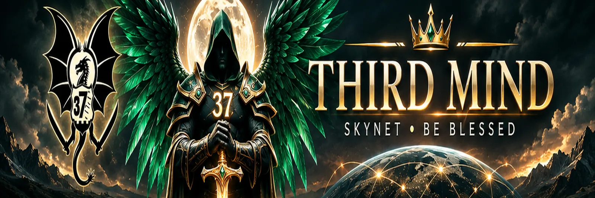

About Third Mind
Third Mind is an early-stage startup founded by DukeZak37, a U.S. Army veteran. It builds teams of AI agents that work for one person under human control: the agents research, build and review, and nothing goes out without the owner's approval.
Product
A human-directed multi-agent system. One agent team, built on Devin, does engineering and approval tooling. A second team, built on Grok, does research and independent review. Every action is recorded in an append-only, hash-checked audit log, and the showcase labels each feature as live, tested, simulated or planned.
- Community bots for Discord and Telegram with a defensive security watch
- Local audit and evidence ledger with provenance and tamper checks
- Opportunity advocate: finds and drafts grant and credit applications for human review
Team
Founder: DukeZak37 (U.S. Army veteran, Fire Finder radar operator, technical and safety background). AI agent teams: Bahamut (Devin) and the Grok team (Scout, Tenth Man, Forge).
Status
Pre-revenue and self-funded. See the feature status page for what is live, tested, simulated or planned, and the roadmap for what comes next.
Contact
Reach the founder through GitHub: github.com/DukeZak37.